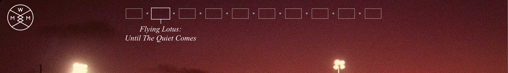

It is great to have white background since the design scope becomes very broad and flexible. Sans serif typefaces are very modern. The thickness of the typeface is very significant because it could ruin all the modern look when it gets thicker.

This website has hover effects going on everywhere. The overall design looks really simple and minimal. Typefaces and typography are treated nicely using different types of typefaces, still having clean design. But it draws audience's attention more has the hover effects come to the place. They do not bother audience at all, fast loading, straightforward on purposes of hover effects.



Parallax scrolling really interests audience. It could be very distracting or too loud depending on how much animation or color you have. However this website well managed to make the design very crisp and solid by just using black and white.
This time colors are very bright. It could've been very loud if this website relies on graphic design. The website is more about animation, which brings up the potential parallax scrolling has. It shows the story that animation has and let's audience concentrate on the performance shown on screen.